Table des matières
- I. Introduction — Pourquoi Orbi7rack ?3
- II. Cahier des charges5
- III. Conception UX/UI11
- IV. Maquettage14
- V. Gestion de projet16
- VI. Réalisations et compétences21
- VII. Retour d'expérience32
- VIII. Annexes36
I. Introduction
1. Pourquoi Orbi7rack ?
L'idée est venue d'une frustration face à un problème assez fréquent : faire une commande en ligne et n'avoir qu'une liste d'étapes pour suivre son colis. Parfois une ville ou un pays, mais en général (surtout pour des commandes internationales) les informations sont très limitées (départ d'un pays, arrivé dans un autre, douane). Quand le colis traverse plusieurs pays, plusieurs aéroports, plusieurs transporteurs, cette liste devient vite incompréhensible. On sait que le colis est "en transit" quelque part entre son départ et la destination, mais on ne sait rarement où, et encore moins comment il voyage.
La meilleure solution actuelle, c'est 17TRACK — un agrégateur de suivi avec plus de 3 000 transporteurs en base de données. Outil efficace, mais qui renvoie toujours la même chose : une timeline verticale d'événements, ligne par ligne.
À cette même période, je travaillais sur un gros projet Django. Je cherchais une idée de vrai projet personnel plutôt qu'un simple portfolio ou autre chose qui ne me permettrait pas vraiment de faire évoluer mes compétences, donc j'ai réfléchi et l'idée de lier le suivi de colis et les outils de visualisation qu'il m'arrivait d'utiliser (FlightRadar24 notamment, application qui affiche tous les vols en direct) m'est apparue. Je me suis donc demandé si c'était possible de retrouver le transport lié a une commande, et de le suivre en direct avec FlightRadar24 ?
L'idée d'Orbi7rack était née : suivre ses colis visuellement et en direct, partout à travers le monde, et plus par un enchaînement d'événements ligne par ligne.
2. Le globe comme interface
L'inspiration visuelle est venue de sites qui ont eu beaucoup de visibilité et de clones pendant les périodes de conflits du début d'année, notamment conflicty.app, qui permettait de visualiser en live sur un globe les zones de tension avec affichage d'événements en modal et d'autres informations (bourse, estimations, paris Polymarket). Un rendu futuriste, presque holographique, qui rendait la recherche d'informations et la compréhensiion du contexte mondial facilement accessible et compréhensible.
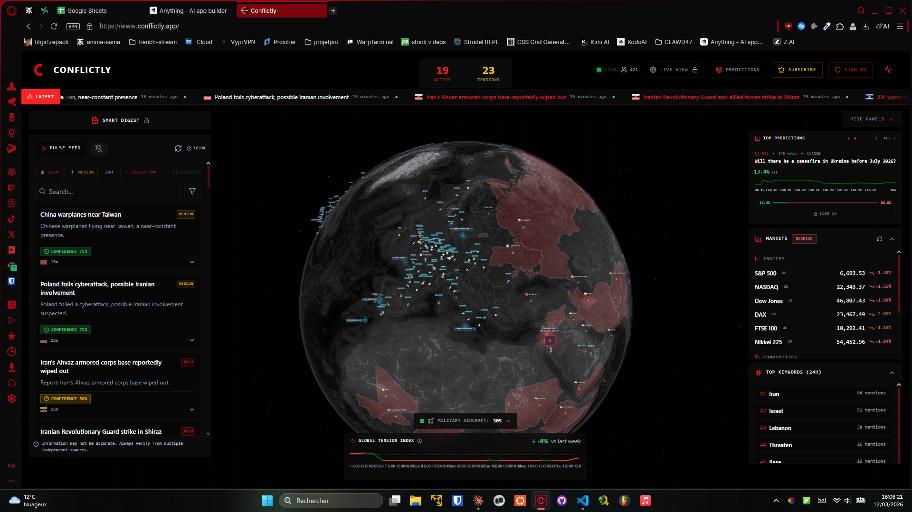
C'est cette vision que j'ai voulu appliquer au suivi de colis : pas une carte 2D statique, mais un globe 3D interactif, avec des arcs lumineux entre les origines et les destinations, des marqueurs pulsants sur les positions en cours, et des images de transport (avion, camion, illustration de colis) qui se déplacent en temps réel ou de façon simulée, quand les données en direct sont absentes.
II. Cahier des Charges
1. Enjeux
1.1. Besoins
Le besoin central est simple : donner à n'importe quelle personne qui commande en ligne une lecture spatiale et intuitive de son colis. Mais pour que ça soit réellement utile et pas juste attrayant, Orbi7rack doit :
- Couvrir un maximum de transporteurs : pas seulement Colissimo ou Chronopost, mais aussi les transporteurs internationaux, les intégrateurs cargo (UPS, FedEx, DHL), les transporteurs asiatiques (China Post, Yamato, etc.).
- Interpréter les événements de suivi : les données brutes de 17TRACK contiennent des descriptions en anglais, parfois partielles, parfois redondantes. Il faut les parser, les géocoder, et en extraire les informations exploitables.
- Localiser le colis en permanence : soit via un vol réel retrouvé grâce au numéro de vol dans les descriptions des événements, soit via une simulation réaliste basée sur les timestamps et la distance entre les points connus.
- Offrir une expérience visuelle temps réel : rotation du globe, animations, marqueurs visuels, mise à jour des positions et des événements.
1.2. Objectifs
- Proposer un suivi colis sous forme de globe 3D interactif, consultable depuis un navigateur.
- Relier chaque colis à ses événements de tracking via l'API 17TRACK.
- Géocoder les événements pour obtenir des coordonnées GPS exploitables.
- Retrouver le numéro de vol associé au transport aérien d'un colis, et afficher sa position live via OpenSky ou FlightRadar.
- Simuler un déplacement réaliste quand aucune donnée live n'est disponible.
- Afficher un arc lumineux entre l'origine et la destination de chaque colis, avec un marqueur sur la position courante.
- Permettre à l'utilisateur d'ajouter, consulter et supprimer des colis depuis une interface claire.
2. Fonctionnalités du projet
Must-have
- Inscription / connexion avec authentification sécurisée (JWT)
- Ajout d'un colis par numéro de tracking
- Récupération automatique des événements via l'API 17TRACK
- Géocodage des événements : coordonnées GPS par description / location
- Détection du mode de transport (air, route, mer) à partir des événements
- Extraction du numéro de vol depuis les descriptions d'événements (regex + mapping transporteurs)
- Simulation de position entre deux événements connus (interpolation sphérique)
- Position live via API FlightRadar24 (si vol aérien identifié)
- Rendu globe 3D interactif avec arcs, points, rings pulsants, différentes icônes en fonction du mode de transport
- Sidebar avec liste des colis et statuts colorés
- Modal de détail : timeline des événements + position sur le globe
- Thème dark / light avec cohérence visuelle sur le globe
- Accessibilité minimum : aria-labels, navigation clavier, contraste WCAG AA
- Mobile first (sidebar ajustable, globe adaptatif)
Nice-to-have
- Notifications de changement de statut
- Partage de suivi par lien public
- Filtres avancés par statut, transporteur, pays
- Graphique de fréquence d'événements/Dashboard global de suivi
- Mode différent pour des envois sortants
- Page de présentation/landing plutôt que directement un login
3. Personnes cibles
3.1. Cible principale
Toute personne qui commande sur internet, régulièrement ou non, et surtout à l'international (e-commerce, marketplaces asiatiques type AliExpress, Shein, etc.), et qui suit l'avancée de ses colis de façon habituelle.
3.2. Cible secondaire
- Les petits revendeurs en ligne (dropshipping, Etsy, etc.) qui suivent plusieurs colis en même temps et veulent une vue consolidée.
- Le grand public en général, avec son interface moderne, intuitive et efficace.
3.3. Cœur de cible
Acheteurs réguliers sur des sites internationaux, habitués aux longues livraisons, frustrés par les trackers classiques, à l'aise avec une interface web moderne.
3.4. Personas
Persona 1
Prénom et âge : Damien, 27 ans
Profession : Technicien informatique
Situation : Vit seul en appartement, commande régulièrement du matériel électronique et des accessoires depuis des marketplaces asiatiques
Appareils utilisés : Ordinateur fixe à domicile, smartphone en déplacement
Rapport au numérique : Très à l'aise, utilise régulièrement des outils techniques dans son métier
Besoins : Savoir où exactement est son colis dans sa traversée, surtout pendant les longs transits
Difficultés : Les trackers classiques affichent des statuts vagues ("sortie de l'entrepôt","en transit","arrivée au point de transit","dédouanement"), aucune information spatiale
Attentes vis-à-vis d'Orbi7rack : Voir son colis bouger sur un globe, retrouver le numéro de vol et la position de l'avion en temps réel
Persona 2
Prénom et âge : Jeanne, 34 ans
Profession : Indépendante, gère une boutique Etsy de produits artisanaux
Situation : Envoie et reçoit des colis chaque semaine, souvent depuis l'Europe et les États-Unis
Appareils utilisés : MacBook, iPhone
Rapport au numérique : À l'aise, utilise des outils de gestion en ligne
Besoins : Avoir une vue d'ensemble de tous ses colis en cours sans multiplier les onglets
Difficultés : Avec 17TRACK tout est en ligne l'un après l'autre, impossible de s'y retrouver au dessus de 15 éléments
Attentes vis-à-vis d'Orbi7rack : Un seul endroit pour centraliser tous ses suivis, avec une interface claire et agréable
4. User Stories
| En tant que | Je veux | Afin de |
|---|---|---|
| Utilisateur | M'inscrire avec un email et un mot de passe | Accéder à mon espace personnel sécurisé |
| Utilisateur | Me connecter à mon compte | Retrouver mes colis enregistrés |
| Utilisateur | Ajouter un colis par numéro de tracking | Commencer à suivre sa position |
| Utilisateur | Voir tous mes colis en cours sur le globe | Visualiser leur position respective d'un seul coup d'œil |
| Utilisateur | Cliquer sur un colis dans la sidebar | Zoomer sur sa position sur le globe et ouvrir le détail |
| Utilisateur | Consulter la timeline des événements d'un colis | Comprendre l'historique complet de son trajet |
| Utilisateur | Voir un marqueur visuel entre l'origine et la destination | Avoir une représentation claire et intuitive du trajet |
| Utilisateur | Voir un sprite (avion, camion) se déplacer sur l'arc | Visualiser la progression du transport en temps réel ou simulé |
| Utilisateur | Identifier la position live d'un vol aérien | Suivre l'avion qui transporte mon colis en temps réel |
| Utilisateur | Voir la position simulée quand aucune donnée live n'est dispo | Continuer à suivre mon colis même sans vol identifié |
| Utilisateur | Supprimer un colis de ma liste | Garder une interface propre une fois le colis livré |
| Utilisateur | Basculer entre le thème clair et le thème sombre | Adapter l'affichage à mes préférences ou conditions d'éclairage |
| Utilisateur | Utiliser l'application depuis mon téléphone | Consulter mes colis en déplacement |
5. Contraintes techniques et fonctionnelles
Contraintes liées aux APIs externes
- L'API 17TRACK nécessite une clé d'authentification et impose des limites de requêtes ; la synchronisation des événements doit être pensée avec un polling raisonnable pour éviter les bans.
- L'API FlightRadar24 ne permet de suivre que très peu de vols en direct comparé à l'application, donc il faut trouver une alternative → OpenSky.
Contraintes fonctionnelles
- La simulation de position doit être réaliste : elle utilise l'interpolation sphérique (slerp) et le calcul Haversine pour estimer la progression entre deux événements en tenant compte des distances réelles sur une sphère.
- Le globe ne peut pas être rendu côté serveur (SSR) : globe.gl utilise WebGL et Three.js, qui nécessitent l'accès au DOM ; le composant doit être chargé en
dynamic importavecssr: falsedans Next.js. - La gestion des thèmes dark/light sur le globe demande une reconfiguration complète des matériaux Three.js à chaque changement : palette de couleurs des hexagones, atmosphère, lumières directionnelles, bloom.
Contraintes de déploiement
- L'architecture Docker Compose coordonne le backend Django, le frontend Next.js, PostgreSQL, Redis et Celery dans un ensemble cohérent.
- Les variables d'environnement sensibles (clés API,
SECRET_KEY, credentials OpenSky) sont gérées via un fichier.envjamais committé.
6. Accessibilité
Orbi7rack vise la conformité WCAG AA sur les points suivants :
- Tous les boutons avec une icône seule (toggle thème, fermeture modal, switch arc/live) ont un attribut
aria-labeldescriptif. - Les badges de statut colorés (pending, in_transit, delivered, etc.) sont conçus pour maintenir un contraste suffisant en mode clair comme en mode sombre.
- La navigation clavier est opérationnelle sur la sidebar (items de colis) et le modal de détail, avec des styles
focus-visibleexplicites. - Toutes les images fonctionnelles disposent d'un attribut
altdescriptif. - La sidebar est collapsible sur mobile pour ne pas masquer le globe sur les petits écrans.
7. Analyse concurrentielle et contexte métier
| Solution | Transporteurs couverts | Visualisation | Temps réel | Simulation de vol |
|---|---|---|---|---|
| 17TRACK | +3 000 | Timeline textuelle | Non | Non |
| AfterShip | +700 | Timeline + carte 2D | Partiel | Non |
| Parcel (app mobile) | ~300 | Liste + notifications | Non | Non |
| Orbi7rack | Via 17TRACK | Globe 3D interactif | Oui (OpenSky) | Oui (SimulationEngine) |
Orbi7rack ne cherche pas à remplacer 17TRACK sur la couverture des transporteurs, il s'appuie dessus. La différence s'appuie sur la couche de visualisation spatiale : transformer une liste d'événements en expérience visuelle immersive. Le positionnement est celui d'un outil complémentaire, pensé pour les utilisateurs qui veulent comprendre le trajet de leur colis, pas juste en lire le statut.
III. Conception UX/UI
1. UI — Charte Graphique
Le parti pris visuel est assumé : Orbi7rack n'est pas un tracker de colis classique. C'est une interface inspirée des outils de surveillance et de la science fiction, holographique et futuriste sans perdre en lisibilité.

1.1. Palette de couleurs
La palette a été pensée autour du globe lui-même, avec deux modes distincts :
Mode sombre (principal)
| Usage | Valeur |
|---|---|
| Fond de page | #0a0000 noir |
| Couleur d'accent (boutons) | Orange #ff6600 |
| Hexagones continent | Palette autour de la couleur d'accent : ["#ff4400","#ff6600","#ff8800","#ffaa00","#cc3300","#ff5500","#dd7700","#ee4400"] |
| Atmosphère globe | Orange-ambre #ff7b00 |
| Arcs de vol | Dégradé cyan → transparent |
| Palette de statut : | 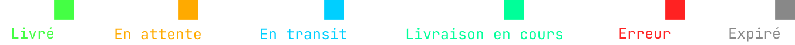 |
| Anneaux pulsants (position du colis) | Cyan |
| Bloom / glow | Activé, intensité 1.6 |
Mode clair
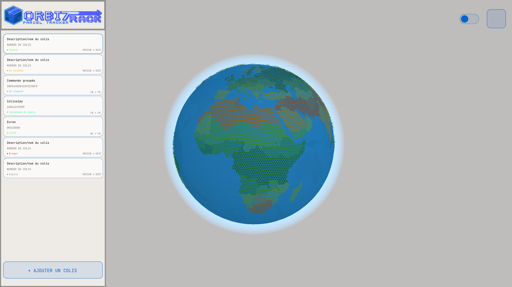
| Usage | Valeur |
|---|---|
| Fond de page | Blanc / gris très clair |
| Hexagones continent | Palette "satellite" : verts, beiges, ocre, marron etc selon la latitude du lieu qui permet d'en déduire le biome |
| Atmosphère globe | Bleu #4488ff |
Le mode sombre est le mode par défaut car le site a été pensé avec cette identitié visuelle. Le mode clair offre une lisibilité alternative, notamment en extérieur.
1.2. Typographie
- Interface (labels, sidebar, modales) : Inter — police sans-serif moderne, excellente lisibilité à toute taille.
- Données techniques (numéros de tracking, codes IATA, timestamps) : JetBrains Mono — monospace avec bonne lisibilité des données structurées.
2. UX
L'UX d'Orbi7rack repose sur un principe central : le globe est l'interface principale, tout le reste est secondaire. La sidebar est un panneau de navigation, pas une page à part entière. Le modal de détail est contextuel, déclenché par le clic sur un colis.
2.1. Arborescence
/ (page principale)
├── Globe 3D interactif (tout l'écran)
├── Sidebar
│ ├── Liste des colis avec statuts
│ ├── Bouton d'ajout de colis
│ └── Toggle arc/live
└── Modal détail colis (contextuel)
├── Informations du colis
├── Timeline des événements
├── Position courante (lat/lng, source)
└── Bouton de suppression du colis
/login → Authentification JWT
/register → Création de compte
2.2. User Flows principaux
Inscription/Connexion
L'utilisateur arrive directement sur cette page, il entre ses informations puis clique sur le bouton de connexion qui le renvoie directement vers la page principale.
Ajout d'un colis
L'utilisateur clique sur le bouton "+" dans la sidebar → saisit son numéro de tracking → valide → le backend appelle 17TRACK, parse les événements, géocode, calcule la position → le colis apparaît sur le globe avec son arc et sa position.
Consultation d'un colis
L'utilisateur clique sur un colis dans la sidebar → la caméra zoome sur la position courante du transport (vol live ou position simulée, pas la destination) → le modal s'ouvre avec la timeline des événements et les métadonnées.
Toggle arc / live
Un bouton dans la sidebar permet de basculer entre la vue "arc" (trajet origine-destination tracé) et la vue "live" (focus sur la position courante en temps réel). Les deux modes sont disponibles simultanément.
2.3. Zoning

L'interface est organisée en trois zones :
- Zone principale (80-90% de l'écran) : le globe 3D, interactif, toujours visible.
- Zone latérale (sidebar, ~300px) : liste des colis, actions, toggle. Collapsible sur mobile.
- Zone modale (overlay contextuel) : détail d'un colis, déclenché au clic, fermable avec Échap.
IV. Maquettage
1. Wireframes
Note : La phase de wireframing classique n'a pas précédé le développement, car la structure de l'interface a été découverte en même temps que les capacités de globe.gl. L'organisation visuelle s'est construite autour des contraintes et des possibilités du rendu WebGL, pas l'inverse.
2. Maquettes (mode sombre et clair)
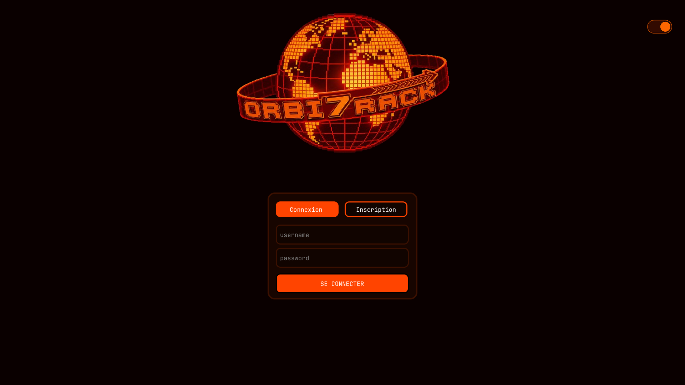
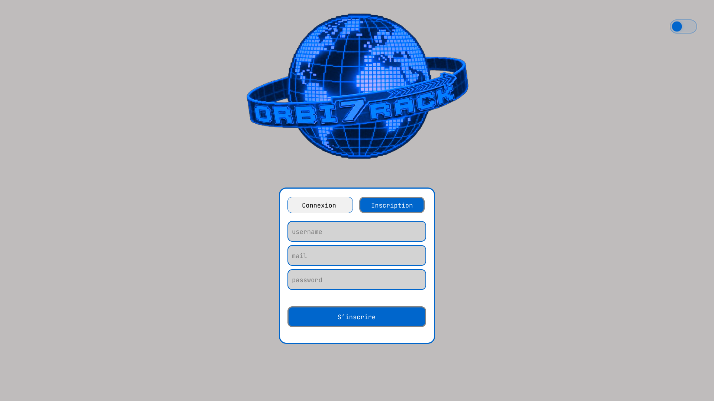

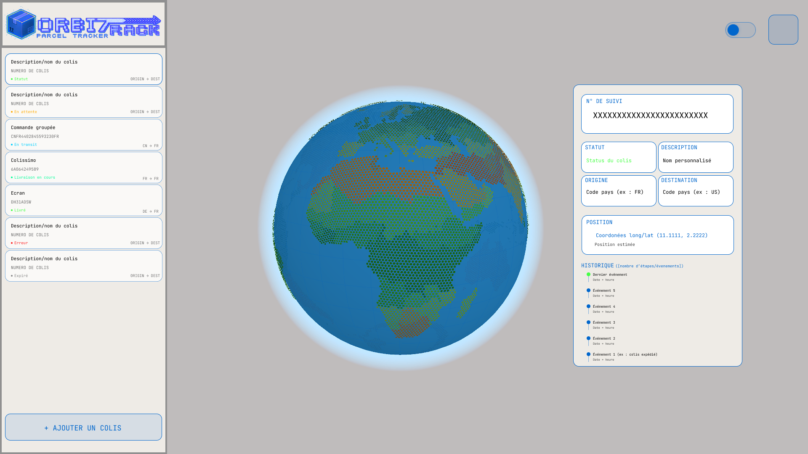
3. Captures de l'interface finale
Interface desktop
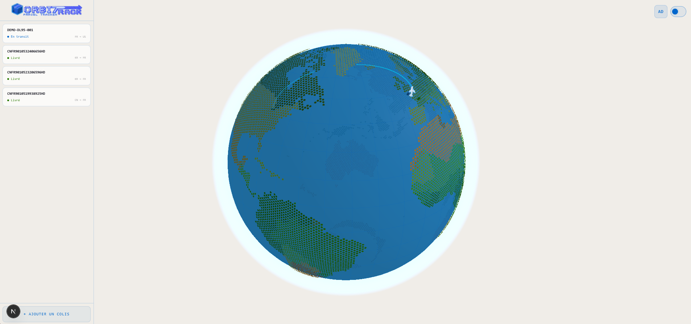
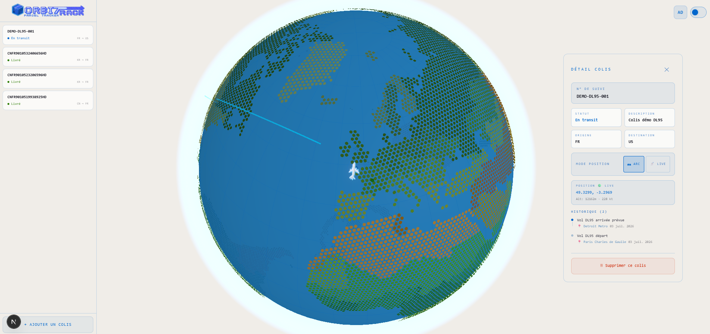
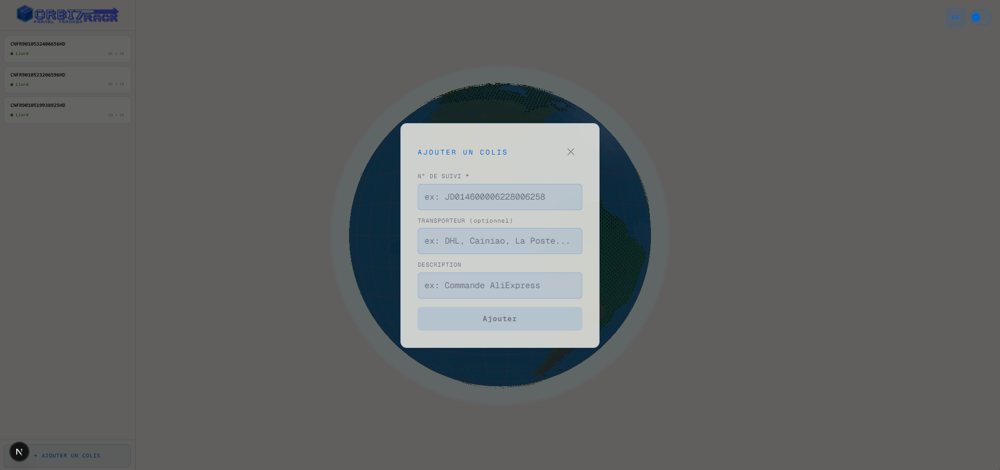
Interface mobile
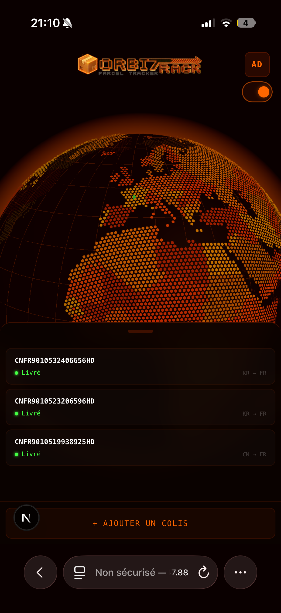
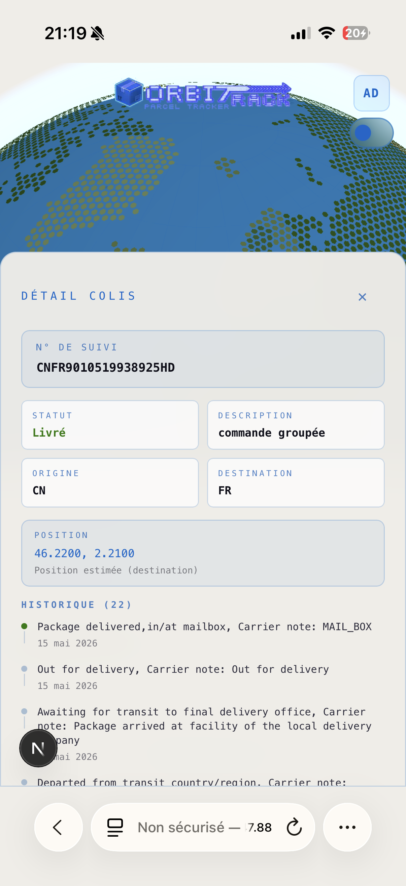
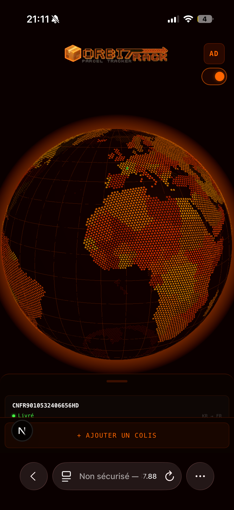
V. Gestion de Projet
1. Organisation de travail
Le projet a été développé en solo, en dehors du cadre scolaire, en parallèle d'autres contraintes. Pas de méthode Scrum formelle — mais une logique itérative très naturelle : un problème constaté → une solution explorée → une implémentation → un test → retour au problème suivant.
L'évolution des plans d'action ci-dessous illustre comment la vision du projet a évolué au fil du développement.
Plan 1 — MVP Full-Stack (vision initiale)
L'objectif initial était de construire un projet full-stack démontrable de bout en bout :
- Phase 1 : Infra backend — Django, PostgreSQL, JWT, Docker Compose,
.envdev/prod. - Phase 2 : Intégration 17TRACK, modèle d'événements, géocodage, endpoints REST, polling Celery.
- Phase 3 : Globe 3D holographique — intégration globe.gl, hexagones H3, atmosphère, bloom, rotation.
- Phase 4 : Affichage des colis sur le globe — markers, tooltips, sidebar, zoom caméra.
- Phase 5 : Animations de transport — arcs animés, sprites avion, intégration FlightRadar24.
- Phase 6 : Design system — tokens CSS, dark/light mode, glassmorphism.
- Phase 7 : Tests, seed démo, README, déploiement.
→ Vision : projet full-stack complet, avec un rendu "waouh" sur le globe. La simulation autonome et la robustesse de la démo n'étaient pas encore des priorités explicites.
Plan 2 — Focus sur la chaîne vol/simulation (pivot technique)
Après avoir posé le socle backend et obtenu un premier globe fonctionnel, il est apparu que le chaînon manquant pour rendre le projet vraiment démontrable était la liaison colis → vol → simulation. Sans ça, les colis se déplacent de façon arbitraire ou restent bloqués sur des centroïdes pays. Le plan a été revu :
- Étape 1 (1j) : Extraction du numéro de vol — regex sur les descriptions 17TRACK, fallback AviationStack, mapping transporteurs→IATA cargo.
- Étape 2 (1j) : SimulationEngine — Haversine, détection du mode de transport, calcul des
estimated_departure/estimated_arrival, persistance surTrackingEvent. - Étape 3 (0,5j) : Seed démo robuste — 3 à 4 colis sur des routes intercontinentales, au moins 1 vol live OpenSky, 1 fallback simulé.
- Étape 4 (0,5j) : Tests pytest — endpoints, géocodage, simulation.
- Étape 5 (1j) : Finition UI/UX — logo SVG, assets SVG, accessibilité, responsive.
- Étape 6 (0,5j) : README + documentation API.
- Étape 7 (1j) : Déploiement.
→ Raison du pivot : sécuriser la soutenance avec une simulation autonome, même si OpenSky ou AviationStack tombaient. Et raconter une vraie histoire de pipeline en temps réel, pas juste afficher des points fixes.
Plan 3 — Industrialisation et QA (plan final)
Une fois la chaîne fonctionnelle stabilisée, l'objectif est devenu de transformer le prototype en application structurée comme un vrai produit :
- Phase 1 : UI/UX polish — arc origine/destination clair, marker pulsant, timeline stylée, micro-interactions, responsive 375px.
- Phase 2 : Backend clean — pagination sur
apiparcels, rate-limiting 17TRACK, logging structuré (Sentry ou fichiers rotatifs), Celery beat pour sync périodique. - Phase 2.5 : Documentation API — OpenAPI 3 avec drf-spectacular, Swagger UI, ReDoc, annotations
@extend_schema, exemples de payloads (estimatedposition,origincoords,destcoords), auth JWT documentée. - Phase 3 : Tests complémentaires — E2E Playwright (parcours login → ajout colis → globe → suppression), tests Celery, couverture ~85%.
- Phase 4 : Déploiement prod — Docker Compose (Nginx + Gunicorn + Postgres + Redis + Celery), variables d'environnement sécurisées, pipeline GitHub Actions (lint → pytest → build Docker).
→ Vision finale : passer d'un prototype soutenable à une application avec de la qualité, de la doc et un pipeline de déploiement reproductible.
2. Technologies utilisées
2.1. Environnement de développement et versioning
| Outil | Usage |
|---|---|
| VS Code | Éditeur de code |
| WSL2 (Windows Subsystem for Linux) | Environnement d'exécution Linux sous Windows |
| Git/GitHub | Versioning, branches, pull requests |
| Docker | Conteneurisation de l'ensemble de la stack |
| Makefile | Raccourcis pour les commandes courantes (migrations, seed, tests) |
Stratégie de branches
main: branche stable de référence.cleanest: branche de développement principal, refactorée après le merge complexe avec main.parcelPlaneFetch: feature branch pour l'extraction de numéro de vol.showcase: branche de démo stable sans les dernières modifications.orbiTests: pytests pour valider les fonctionnalités.fullSimulation: simulation du déplacement entre 2 évenements même sans suivi live (pour gérer les autres modes transports).mobile-dev: finalisation pour compatibilité totale mobile.
2.2. Environnement technique
2.2.1. Technologies frontend
| Technologie | Usage |
|---|---|
| Next.js 14 (App Router) | Framework React — rendu hybride SSR/client, routing |
| TypeScript | Typage statique sur toute la couche frontend |
| globe.gl | Rendu du globe 3D (wrapper Three.js + WebGL) |
| Three.js | Post-processing (bloom), matériaux, lumières, sprites |
| postprocessing (EffectComposer, BloomEffect) | Effet de lueur sur les arcs et points en mode sombre |
| Tailwind CSS | Styling utilitaire |
2.2.2. Technologies backend
| Technologie | Usage |
|---|---|
| Django 5 + Django REST Framework | API REST, modèles, authentification |
| SimpleJWT | Authentification JWT (access token 4h, refresh 7j) |
| PostgreSQL | Base de données relationnelle |
| Celery + Redis | Tâches asynchrones (sync 17TRACK, géocodage) |
| 17TRACK API | Récupération des événements de suivi |
| OpenSky Network API | Position live des vols (Basic Auth) |
| AviationStack API | Enrichissement des vols (fallback optionnel) |
| geopy / base statique | Géocodage des événements |
VI. Réalisations permettant la Mise en Œuvre des Compétences
1. Pages développées
1.1. Interfaces Utilisateur Statiques — Web et Web Mobile
Page de connexion / inscription
Une interface épurée avec formulaire d'authentification, gestion des erreurs inline, et redirection vers la page principale après succès. Design cohérent avec la charte globale du projet.
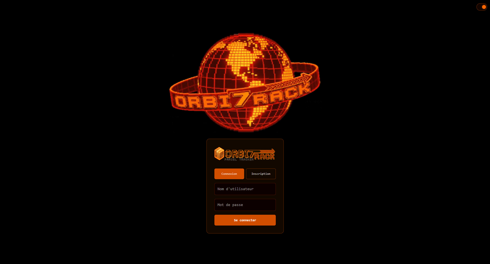
export default function Home() {
const { access } = useAuth();
return (
<>
{/* AuthGate : overlay plein écran z-index 9999 tant que !access */}
<AuthGate>{null}</AuthGate>
{/*
Globe monté UNIQUEMENT après auth.
*/}
{access && (
<main style={{ margin: 0, padding: 0 }}>
<GlobeWithData />
</main>
)}
</>
);
}// Portail d'auth — intercepte tout rendu si JWT absent,
// affiche login/register et le switch dark/light
export default function AuthGate({ children }: { children: React.ReactNode }) {
const { access, login, register } = useAuth();
const { theme, toggleTheme } = useTheme();
const [mode, setMode] = useState<"login" | "register">("login");
// Si token valide → on rend les enfants directement
if (access) return <>{children}</>;
const isDark = theme === "dark";
const assetBase = isDark ? "/assets/dark" : "/assets/light";
const handleSubmit = async (e: React.FormEvent) => {
e.preventDefault();
try {
if (mode === "login") await login(username, password);
else await register(username, email, password);
} catch (err) { setError(err instanceof Error ? err.message : "Erreur inconnue"); }
};
return (
<div style={{ position: "fixed", inset: 0, zIndex: 9999, background: bg }}>
{/* Switch dark/light (coin haut-droit) */}
<button role="switch" aria-checked={isDark} onClick={toggleTheme}
style={{ position: "absolute", top: 16, right: 16 }}>
{/* thumb positionné à gauche (clair) ou droite (sombre) */}
<span style={{ left: isDark ? 22 : 4 }}>
{isDark ? <MoonIcon /> : <SunIcon />}
</span>
</button>
{/* Logo vidéo thémé */}
<video autoPlay loop muted playsInline>
<source src={`${assetBase}/orbi7rack-video.mp4`} type="video/mp4" />
</video>
{/* Formulaire login / register */}
<form onSubmit={handleSubmit}>
{(["login", "register"] as const).map(m => (
<button key={m} type="button" onPointerUp={() => setMode(m)}
style={{ background: mode === m ? accent : "transparent" }}>
{m === "login" ? "Connexion" : "Inscription"}
</button>
))}
<input placeholder="Nom d'utilisateur" value={username} />
<input type="password" placeholder="Mot de passe" value={password} />
<button type="submit">{loading ? "..." : "Se connecter"}</button>
</form>
</div>
);
}Page principale (globe + sidebar)
L'interface principale est une vue quasi plein-écran avec le globe 3D à droite et la sidebar à gauche. La sidebar liste les colis avec leurs badges de statut colorés (couleurs sémantiques : cyan pour "in_transit", vert pour "delivered", ambre pour "pending"). Un bouton flottant permet d'ajouter un colis.
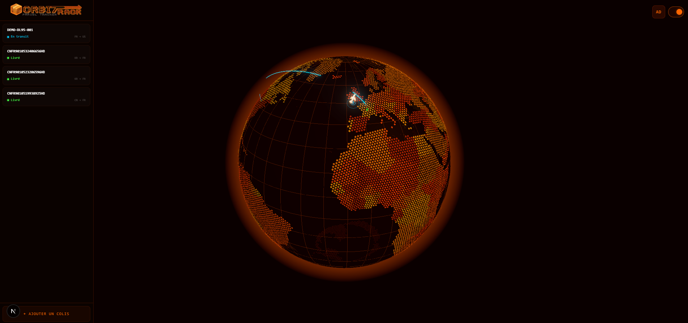
return (
<>
<Globe
parcels={parcels}
globeRef={globeRef}
flightPositions={flightPositions}
positionMode={positionMode}
theme={theme}
/>
<Sidebar
parcels={parcels}
loading={loading}
onSelectParcel={handleSelectParcel}
onParcelAdded={handleParcelAdded}
onDeleteParcel={handleDeleteParcel}
flightPositions={flightPositions}
theme={theme}
/>
<TopBar />
{selectedParcel && (
<ParcelDetailModal
parcel={selectedParcel}
onClose={handleCloseModal}
onDelete={handleDeleteParcel}
flightPosition={flightPositions[selectedParcel.id]}
positionMode={positionMode[selectedParcel.id] ?? "arc"}
onToggleMode={handleToggleMode(selectedParcel.id)}
theme={theme}
/>
)}
</>
);1.2. Interfaces Utilisateur Dynamiques — Web et Web Mobile
Globe 3D interactif
Le globe est le cœur de l'application. Il est chargé en dynamic import avec ssr: false car WebGL nécessite le DOM navigateur. Il réagit en temps réel aux données des colis : ajout d'un colis → apparition de son arc et de son marqueur en quelques secondes.
Les données sont structurées en 4 datasets que globe.gl consomme :
- Points : position courante de chaque colis (coloré selon le statut).
- Arcs : trajet entre l'origine et la destination, animés en pointillés.
- Rings : animation pulsante sous le marqueur pour les colis "in_transit" et "out_for_delivery".
- Transport (sprites Three.js) : icône avion ou camion positionnée sur l'arc et orientée selon le cap de vol.
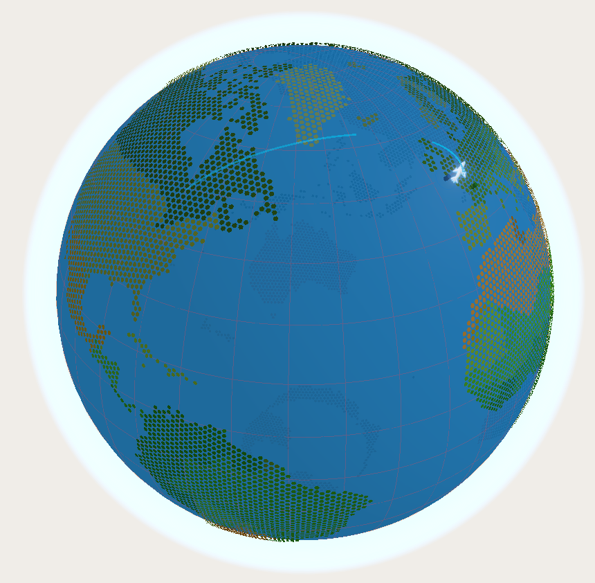
// Initialisation via globe.gl : fond océan, hexagones pays, bloom, rotation auto
const globe = (GlobeGL as any)(
{ animateIn: false, rendererConfig: { antialias: true, alpha: true } }
)(containerRef.current)
.backgroundColor("rgba(0,0,0,0)")
.showGraticules(true)
.atmosphereColor(isDark ? "#ff6600" : "#4db8ff")
.atmosphereAltitude(0.12)
.globeMaterial(new THREE.MeshPhongMaterial({
color: new THREE.Color(ocean.color),
emissive: new THREE.Color(ocean.emissive),
transparent: true, opacity: 0.95,
}))
// Hexagones pays colorés (biome par latitude en light, palette orange en dark)
.hexPolygonsData(countries.features)
.hexPolygonResolution(3)
.hexPolygonMargin(0.3)
.hexPolygonColor((feat: any) => stableHexColor(feat, isDark))
.hexPolygonAltitude(0.01)
.pointsData([]).arcsData([]).ringsData([]);
globe.controls().autoRotate = true;
globe.controls().autoRotateSpeed = 0.6;
// Bloom (postprocessing) — intensité réduite en mode light
const composer = new EffectComposer(renderer);
composer.addPass(new RenderPass(scene, camera));
composer.addPass(new EffectPass(camera, new BloomEffect({
intensity: b.intensity, // dark: 1.6 / light: 0.5
luminanceThreshold: b.threshold, // dark: 0.3 / light: 0.5
luminanceSmoothing: b.smoothing,
mipmapBlur: true,
})));
// Boucle d'animation : mise à jour sprites (avions/colis) + rendu composer
const animate = () => {
frameRef.current = requestAnimationFrame(animate);
globe.controls().update();
// ... interpolation LERP des sprites ...
composer.render();
};
animate();Toggle arc / live et changement de thème
Il y a 2 toggle dans le projet : un dans le modal de colis qui permet de basculer entre le mode arc (aligné à l'arc de trajet) et le mode live (focus sur la position réelle) lorsqu'une position en direct en disponible, et un dans la barre supérieure afin d'alterner entre les modes clair et sombre. Le changement de thème reconfigure l'ensemble des matériaux Three.js en temps réel.
// Deux modes de rendu de la position courante sur le globe :
// "arc" → icône interpolée sur la courbe de l'arc (SLERP) — toujours disponible
// "live" → icône positionnée sur les coordonnées GPS réelles du vol (si source live)
export type PositionMode = "arc" | "live";
export type PositionModeMap = Record<number, PositionMode>;
// Arc par défaut pour tous les colis (override possible par l'utilisateur)
const positionMode: PositionModeMap = {};
for (const [idStr] of Object.entries(positions)) {
const id = Number(idStr);
positionMode[id] = modeOverrides[id] ?? "arc";
}
// Dans Globe.tsx — boucle d'animation : branchement selon le mode actif
const mode = positionModeRef.current[arc.id] ?? "arc";
if (mode === "live") {
// GPS brut du vol — altitude réelle (normalisée sur ARC_ALTITUDE)
targetLat = livePos.lat;
targetLng = livePos.lng;
targetAlt = Math.min(ARC_ALTITUDE, ((livePos.altitude ?? 10000) / 12000) * ARC_ALTITUDE);
} else {
// Mode arc : SLERP sur origin → destination selon progress (0.05 – 0.95)
const origin = livePos.origin ?? { lat: arc.startLat, lng: arc.startLng };
const dest = livePos.destination ?? { lat: arc.endLat, lng: arc.endLng };
[targetLat, targetLng] = slerpLatLng(
origin.lat, origin.lng, dest.lat, dest.lng, progress
);
targetAlt = Math.sin(progress * Math.PI) * ARC_ALTITUDE;
}export function ThemeProvider({ children }: { children: ReactNode }) {
const [theme, setTheme] = useState<Theme>("dark");
useEffect(() => {
const stored = localStorage.getItem("orbi_theme") as Theme | null;
const initial = (stored === "light" || stored === "dark") ? stored : "dark";
setTheme(initial);
// data-theme sur <html> — évite le hydration mismatch SSR/client Safari iOS
document.documentElement.setAttribute("data-theme", initial);
}, []);
const toggleTheme = () => {
setTheme(prev => {
const next = prev === "dark" ? "light" : "dark";
localStorage.setItem("orbi_theme", next);
document.documentElement.setAttribute("data-theme", next);
return next;
});
};
return (
<ThemeContext.Provider value={{ theme, toggleTheme }}>
{children}
</ThemeContext.Provider>
);
}Modal de détail
Au clic sur un colis dans la sidebar, la caméra du globe effectue un zoom fluide (POV animé sur 1,2 seconde) vers la position courante du transport — pas la destination. Le modal s'ouvre simultanément avec la timeline des événements, les coordonnées, la source de position (live / simulated / centroid) et le numéro de vol si disponible.
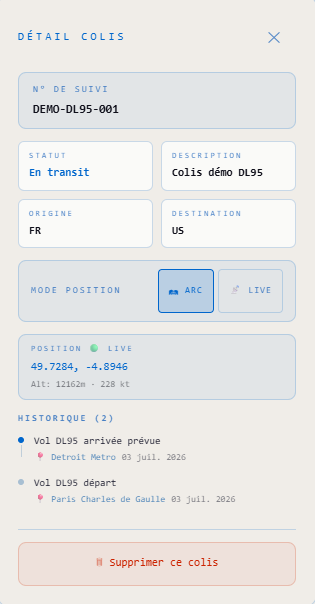
1.3. Logique Serveur et Base de Données
Modèles de données
Les deux modèles principaux sont Parcel et TrackingEvent.
Parcel stocke les informations du colis : numéro de tracking, statut, pays d'origine, pays de destination, numéro de vol, position live persistée (last_live_lat, last_live_lng, last_live_at), coordonnées géocodées de l'origine et de la destination.
TrackingEvent stocke chaque événement de suivi : timestamp, description, location, coordonnées GPS géocodées, mode de transport détecté (air/road/sea/unknown), numéro de vol associé, et données de simulation (estimated_departure, estimated_arrival, simulated: bool).
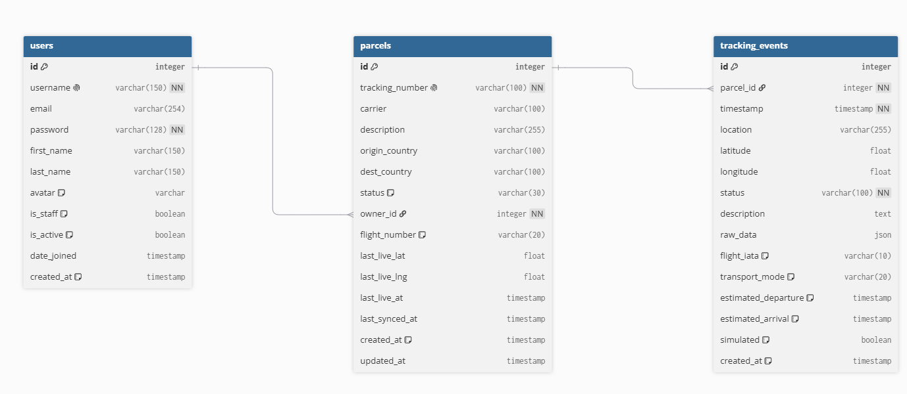
Pipeline de synchronisation
Quand un utilisateur ajoute un colis, le pipeline se déclenche :
- Vérifie si le colis n'existe pas déjà en base de données.
- Appel à l'API 17TRACK → récupération des événements bruts.
- Parsing des événements : extraction des timestamps, descriptions, locations.
- Géocodage de chaque event : lookup dans la base de centroïdes IATA, puis fallback sur Nominatim ou la base statique pays.
- Extraction du numéro de vol : regex sur les descriptions, mapping transporteurs, fallback AviationStack.
- Détection du mode de transport : mots-clés dans les descriptions (hub, linehaul, local delivery, airport…).
- SimulationEngine : calcul Haversine entre paires d'événements, estimation des départs/arrivées, calcul du
progresscourant. - Persistance en base + envoi au frontend via la réponse API.
for event in events:
timestamp = parse_17track_datetime(event.get("a"))
description = (event.get("z") or event.get("ps") or "").strip()
location = extract_event_location(event)
if not timestamp and not description:
continue
# un event identique (colis + timestamp + description)
# n'est jamais inséré deux fois, même si l'API renvoie les mêmes données.
event_obj, created = TrackingEvent.objects.get_or_create(
parcel=parcel,
timestamp=timestamp or timezone.now(),
description=description,
defaults={
"location": location,
"latitude": None,
"longitude": None,
"status": description[:100] if description else "Inconnu",
},
)
if created:
enrich_event_flight(event_obj, carrier_name=parcel.carrier or "")
event_obj.save(update_fields=["flight_iata", "transport_mode"])
if location:
created_event_ids.append(event_obj.id)
if event_obj.flight_iata and not parcel.flight_number:
parcel.flight_number = event_obj.flight_iata
parcel.save(update_fields=["flight_number"])def sync_parcel_from_17track(parcel, payload):
accepted = payload.get("data", {}).get("accepted", [])
if not accepted:
raise ValueError("Aucun suivi disponible sur 17TRACK.")
track = accepted[0].get("track", {})
# Parsing des événements bruts (clé z1 = liste des stops)
for event in track.get("z1", []) or []:
timestamp = parse_17track_datetime(event.get("a"))
description = (event.get("z") or event.get("ps") or "").strip()
location = extract_event_location(event)
event_obj, created = TrackingEvent.objects.get_or_create(
parcel=parcel,
timestamp=timestamp or timezone.now(),
description=description,
defaults={
"location": location,
"latitude": None,
"longitude": None,
"status": description[:100] if description else "Inconnu",
},
)
if created:
enrich_event_flight(event_obj, carrier_name=parcel.carrier or "")
event_obj.save(update_fields=["flight_iata", "transport_mode"])
if location:
geocode_event_then_simulate.delay(event_obj.id)Résolution de la position courante
La position affichée sur le globe pour chaque colis suit une priorité stricte :
last_live_lat/lngsi non null (position GPS live persistée).- Dernier event géocodé (tous statuts, y compris "delivered").
- Centroïde du pays de destination.
- Centroïde du pays d'origine (fallback ultime).
Cette priorité a été affinée après plusieurs bugs où des colis livrés aux États-Unis se retrouvaient systématiquement affichés au centroïde géographique du pays (Kansas, 37°N / 95°W) au lieu de leur vraie destination.
Endpoint flightposition
L'endpoint /api/parcels/:id/flightposition/ retourne la position courante d'un transport en temps réel ou simulé :
# Accessible via GET /api/parcels/{id}/flight_position/
# Renvoie la position live (OpenSky/FR24), stale (cache DB) ou simulée du colis
@action(detail=True, methods=["get"])
def flight_position(self, request, pk=None):
parcel = self.get_object()
# Coordonnées d'arc : centroid pays ou fallback sur geo_events
origin_coords = _country_centroid(parcel.origin_country)
dest_coords = _country_centroid(parcel.dest_country)
if not origin_coords or not dest_coords:
geo_events = parcel.events.filter(
latitude__isnull=False, longitude__isnull=False
).order_by("timestamp")
if geo_events.count() >= 2:
first, last = geo_events.first(), geo_events.last()
origin_coords = origin_coords or (first.latitude, first.longitude)
dest_coords = dest_coords or (last.latitude, last.longitude)
# --- Live (OpenSky / FR24) ---
if parcel.flight_number:
position = get_flight_live_position(parcel.flight_number)
if position:
live_origin = _airport_coords(position.get("origin_iata"))
live_dest = _airport_coords(position.get("destination_iata"))
final_origin = live_origin or origin_coords
final_dest = live_dest or dest_coords
if final_origin and final_dest:
current = (position["lat"], position["lng"])
position["progress"] = _compute_progress(final_origin, final_dest, current)
position["origin"] = {"lat": final_origin[0], "lng": final_origin[1]}
position["destination"] = {"lat": final_dest[0], "lng": final_dest[1]}
parcel.save(update_fields=["last_live_lat", "last_live_lng", "last_live_at"])
return Response(position)
# Fallback stale : dernière position connue en cache DB
if parcel.last_live_lat is not None:
stale = {"lat": parcel.last_live_lat, "lng": parcel.last_live_lng,
"source": "live", "stale": True, "provider": "db_cache"}
return Response(stale)
# --- Fallback : simulation temporelle (interpolation sphérique) ---
progress = _compute_simulated_progress(parcel)
position = get_simulated_position(origin_coords, dest_coords, progress)
return Response(position)Et le retour est le suivant (dans le cas live) :
{
"lat": 4.71,
"lng": 99.90,
"altitude": 37000,
"speed": 486,
"heading": 145,
"source": "live",
"provider": "opensky",
"progress": 0.52,
"origin": { "lat": 1.35, "lng": 103.82 },
"destination": { "lat": 51.47, "lng": -0.46 }
}
La distinction live / simulated / stale est propagée jusqu'au frontend pour choisir entre position GPS directe, interpolation sphérique sur l'arc, ou dernières coordonnées connues.
@action(detail=True, methods=["get"], url_path="flightposition")
def flightposition(self, request, pk=None):
parcel = self.get_object()
# 1. Position live (OpenSky) si un vol IATA est connu
if parcel.flight_iata:
pos = fetch_live_position(parcel.flight_iata)
if pos:
parcel.last_live_lat = pos["lat"]
parcel.last_live_lng = pos["lng"]
parcel.last_live_at = timezone.now()
parcel.save(update_fields=["last_live_lat", "last_live_lng", "last_live_at"])
return Response({**pos, "source": "live", "provider": "opensky"})
# 2. Position simulée via SimulationEngine
sim = SimulationEngine(parcel)
result = sim.compute_current_position()
if result:
return Response({**result, "source": "simulated"})
# 3. Dernier event géocodé connu (stale)
last_event = (
parcel.events.filter(latitude__isnull=False)
.order_by("-timestamp").first()
)
if last_event:
return Response({
"lat": last_event.latitude, "lng": last_event.longitude,
"source": "stale", "progress": None,
})
return Response({"error": "position indisponible"}, status=404)SimulationEngine
Quand aucun vol live n'est disponible, le SimulationEngine prend le relai. Il calcule :
- La distance réelle entre deux points en utilisant la formule Haversine.
- La vitesse estimée selon le mode de transport (avion : ~900 km/h, camion : ~80 km/h, bateau : ~30 km/h).
- Le
progressentre 0 et 1 à l'instant t, utilisé par le frontend pour interpoler la position de la sprite sur l'arc via une interpolation sphérique (slerp).
import math
from datetime import timezone as tz
SPEED_KMH = {"air": 900, "road": 80, "sea": 30, "unknown": 500}
def haversine_km(lat1, lon1, lat2, lon2):
R = 6371
φ1, φ2 = math.radians(lat1), math.radians(lat2)
dφ = math.radians(lat2 - lat1)
dλ = math.radians(lon2 - lon1)
a = math.sin(dφ/2)**2 + math.cos(φ1)*math.cos(φ2)*math.sin(dλ/2)**2
return R * 2 * math.atan2(math.sqrt(a), math.sqrt(1 - a))
class SimulationEngine:
def __init__(self, parcel):
self.parcel = parcel
self.events = list(
parcel.events.filter(latitude__isnull=False).order_by("timestamp")
)
def compute_current_position(self):
if len(self.events) < 2:
return None
now = datetime.now(tz.utc)
for i in range(len(self.events) - 1):
e1, e2 = self.events[i], self.events[i + 1]
if not (e1.timestamp <= now <= e2.timestamp):
continue
dist = haversine_km(e1.latitude, e1.longitude, e2.latitude, e2.longitude)
speed = SPEED_KMH.get(e1.transport_mode, 500)
dur_h = dist / speed
elapsed = (now - e1.timestamp).total_seconds() / 3600
t = min(elapsed / dur_h, 1.0) if dur_h > 0 else 0.5
lat, lng = slerp_position(e1.latitude, e1.longitude, e2.latitude, e2.longitude, t)
return {"lat": lat, "lng": lng, "progress": round(t, 4)}
return None1.4. Sécurité
- Authentification JWT : access token 4h, refresh token 7 jours avec rotation. Tous les endpoints sont protégés ; un
Authorization: Bearer <token>est requis. - CORS : configuré strictement pour n'autoriser que le frontend Next.js.
- Variables sensibles : aucune clé API ni credential n'est committé. Tout passe par
.envavec un.env.exampledocumenté. - RLS non activé (Supabase non utilisé ici) : la séparation des données par utilisateur est gérée au niveau des queryset Django — un utilisateur ne peut accéder qu'à ses propres colis.
- Proxy Next.js pour les ressources externes : les appels à
apicountriespour les géojson de pays passent par un proxy/api/countriesNext.js pour éviter les problèmes CORS côté navigateur.
2. SEO
Orbi7rack est une application web authentifiée — le SEO au sens classique ne s'applique pas aux pages protégées. La page de connexion et la page de présentation publique (si implémentée) bénéficient des balises <title>, <meta description>, et des OG tags Next.js pour le partage social. Par la suite je compte faire une landing page avec des informations sur le site pour renforcer le SEO.
3. Compatibilité des navigateurs
| Navigateur | Compatibilité |
|---|---|
| Chrome / Edge (Chromium) | ✅ Optimal — WebGL performant |
| Firefox | ✅ Compatible — rendu WebGL correct |
| Safari (macOS / iOS) | ⚠️ Partiel — WebGL supporté mais certaines fonctionnalités Three.js peuvent varier |
| Mobile Chrome/Safari | ✅ Fonctionnel avec sidebar collapsible |
Les navigateurs sans support WebGL sont hors scope — globe.gl en a besoin par design.
4. Accessibilité
Mise en œuvre des critères WCAG AA sur les éléments interactifs :
aria-labelsur tous les boutons icônes (toggle thème, fermeture modal, switch arc/live).- Contraste vérifié sur les badges de statut en dark et light mode.
- Navigation clavier complète sur la sidebar et le modal (focus visible).
- Attributs
altsur toutes les images fonctionnelles. - État vide affiché sur la sidebar (empty state avec illustration) pour guider l'utilisateur sans colis.
VII. Retour d'Expérience
1. Veille et difficultés rencontrées
La gestion des GeoJSON et le problème de l'antiméridien
Le premier défi technique significatif a été l'affichage des frontières pays sur le globe. Les premières tentatives avec des fichiers TopoJSON simplifiés (world-atlas) produisaient des erreurs geometriques : anneaux invalides, polygones qui traversent l'antiméridien, problèmes de winding order. Chaque artefact se traduisait par des hexagones ratés ou des pays absents.
La solution a été d'aller à la source du problème : analyser le pipeline de données plutôt que de bricoler les symptômes. Passage sur des fichiers GeoJSON Natural Earth natifs, ajout d'un proxy Next.js (/api/countries) pour éviter les problèmes CORS lors du chargement, et correction manuelle des anneaux problématiques. Un travail de detective géospatial pas forcément dans le programme, mais qui a profondément appris comment fonctionne la représentation vectorielle des frontières.
Les bugs de position et la priorité de géocodage
Plusieurs bugs ont eu la même cause racine : une logique de priorité mal pensée pour résoudre la position d'un colis. Le cas le plus emblématique est le "bug du Kansas" — des colis livrés aux États-Unis s'affichaient systématiquement au centroïde géographique du pays (37°N / 95°W) parce que la logique if status == "delivered" → fallback destcountry court-circuitait la lecture des coordonnées des événements.
La correction a demandé de formaliser une priorité stricte et de la documenter clairement : position live persistée → dernier event géocodé → centroïde destination → centroïde origine. Ce type de bug, invisible à première vue, illustre bien pourquoi la gestion de données imprécises ou incomplètes est l'une des vraies difficultés d'un projet de tracking en production.
L'intégration OpenSky et les changements d'API
OpenSky Network a migré vers OAuth2 (client credentials) entre deux phases du projet. Résultat : des 401 Unauthorized inattendus après une intégration qui fonctionnait parfaitement. Après investigation, il s'est avéré que le clientId public (opensky-api) attendu par leur nouveau système ne correspondait pas à ce qui était documenté — et que le Basic Auth historique fonctionnait toujours sur certains endpoints. Retour au Basic Auth, mis en cache côté Django pour limiter les appels, avec une gestion robuste des erreurs et un fallback sur la simulation si l'API ne répond pas.
Leçon retenue : les APIs externes ne sont pas fiables. Un projet comme Orbi7rack doit fonctionner même quand elles tombent. C'est la raison principale du SimulationEngine.
Les merges complexes et la discipline de branches
À un moment du développement, deux branches (main et cleanest) avaient divergé sur des fichiers critiques (Globe.tsx, page.tsx). Un merge mal résolu a entraîné des crashes à répétition — des constantes entières manquantes (STATUS_COLORS_DARK, POV_DURATION), causant des ReferenceError silencieux qui coupaient l'exécution avant d'atteindre le vrai code.
La résolution a demandé de tracer chaque erreur à sa cause racine, de comprendre quelle version de chaque fichier était la bonne, et de les réintroduire manuellement avec une stratégie --strategy-option theirs contrôlée. Ce type d'incident est finalement formateur : il oblige à comprendre ce que fait réellement Git pendant un merge, au-delà des commandes usuelles.
La séparation des responsabilités sur le globe
Un bug récurrent a été l'inversion des origines/destinations sur les arcs : la fonction qui calculait la position courante du transport était la même que celle qui calculait les extrémités de l'arc. Quand la position live changeait, les deux bougaient.
Le fix a imposé un refactor clair, trois fonctions distinctes et explicitement nommées :
resolveArcOrigin(p): coordonnées du point de départ de l'arc.resolveArcDest(p): coordonnées du point d'arrivée de l'arc.resolveCurrentPosition(p, flightPositions): position actuelle du transport (mobile).
Un exemple typique où un bug de logique se corrige mieux par une meilleure organisation du code que par un patch ponctuel :
/** Coordonnées du point d'origine pour l'arc */
function resolveArcOrigin(p: Parcel): [number, number] | null {
if (p.origin_lat != null && p.origin_lng != null)
return [p.origin_lat, p.origin_lng];
if (p.origin_country) return countryCentroid(p.origin_country);
return null;
}
/** Coordonnées du point de destination pour l'arc */
function resolveArcDest(p: Parcel): [number, number] | null {
if (p.dest_lat != null && p.dest_lng != null)
return [p.dest_lat, p.dest_lng];
if (p.dest_country) return countryCentroid(p.dest_country);
return null;
}
/** Position courante du colis sur le globe (priorité : live > simulée > centroïde) */
function resolveCurrentPosition(p: Parcel): [number, number] | null {
if (p.last_live_lat != null) return [p.last_live_lat, p.last_live_lng!];
if (p.current_lat != null) return [p.current_lat, p.current_lng!];
const dest = resolveArcDest(p); // centroïde destination
if (dest) return dest;
return resolveArcOrigin(p); // fallback ultime
}2. Évolutions possibles
- Notifications push : alerter l'utilisateur quand un colis change de statut, via Web Push API ou email.
- Vue multi-colis améliorée : filtres par statut, par transporteur, par pays. Tri par "dernier événement récent".
- Support des colis sortants : permettre le suivi d'envois (pas seulement de réceptions), utile pour les vendeurs en ligne.
- Intégration directe FlightRadar24 : accès à une donnée de position plus fine que OpenSky, notamment pour les vols cargo.
- Partage public : lien de suivi partageable sans compte, en lecture seule.
- Application mobile native (React Native / Expo) : version mobile dédiée avec notifications système, accès hors ligne des derniers états connus.
- Vraie landing page : page de présentation publique, avec captures d'écran et informations.
3. Évolution personnelle
Orbi7rack a été mon premier projet où j'ai dû gérer simultanément des couches techniques très différentes : une API REST Django avec des logiques métier complexes (géocodage, simulation, intégrations externes), un rendu 3D WebGL avec Three.js/globe.gl, et une interface React/Next.js avec gestion d'état asynchrone. La complexité n'était pas dans chaque couche individuellement, mais dans la façon dont elles fonctionnent ensemble et dans la façon dont un bug dans une couche peut se manifester visuellement dans une autre, plusieurs niveaux plus haut.
J'ai aussi appris que les projets les plus intéressants sont ceux où le visuel masque une quantité conséquente de travail sur la qualité des données. Le globe 3D, c'est 20% du projet. Les 80% restants, c'est s'assurer que les données qui arrivent dessus sont correctes, cohérentes, et fiables même quand les sources externes font n'importe quoi (dans ces 80% il y en a peut-être 20% dédiés à ce que ces données s'affichent comme souhaité sur le globe).
VIII. Annexes
1. MCD (Modèle Conceptuel de Données)
2. MLD (Modèle Logique de Données)
users (id, username, email, password, first_name, last_name, avatar, is_staff, is_active, date_joined, created_at)
parcels (id, tracking_number, carrier, description, origin_country, dest_country, status, #owner_id → users.id, flight_number, last_live_lat, last_live_lng, last_live_at, last_synced_at, created_at, updated_at)
tracking_events (id, #parcel_id → parcels.id, timestamp, location, latitude, longitude, status, description, raw_data, flight_iata, transport_mode, estimated_departure, estimated_arrival, simulated, created_at)
3. Dictionnaire de données
| Champ | Table | Type | Description |
|---|---|---|---|
tracking_number |
Parcel | VARCHAR | Numéro de tracking unique du colis |
status |
Parcel | ENUM | Statut : pending, in_transit, out_for_delivery, delivered, exception |
origin_country |
Parcel | CHAR(2) | Code ISO2 du pays d'expédition |
dest_country |
Parcel | CHAR(2) | Code ISO2 du pays de destination |
flight_number |
Parcel | VARCHAR nullable | Numéro de vol IATA associé au transport principal |
last_live_lat |
Parcel | FLOAT nullable | Dernière latitude GPS persistée (live ou seed) |
last_live_lng |
Parcel | FLOAT nullable | Dernière longitude GPS persistée |
last_live_at |
Parcel | DATETIME nullable | Timestamp de la dernière position live |
timestamp |
TrackingEvent | DATETIME | Date/heure de l'événement |
description |
TrackingEvent | TEXT | Description brute de l'événement (source 17TRACK) |
location |
TrackingEvent | VARCHAR | Location brute (ville, aéroport, pays) |
latitude |
TrackingEvent | FLOAT nullable | Latitude géocodée |
longitude |
TrackingEvent | FLOAT nullable | Longitude géocodée |
transport_mode |
TrackingEvent | ENUM | Mode détecté : air, road, sea, unknown |
flight_iata |
TrackingEvent | VARCHAR nullable | Numéro de vol IATA extrait de la description |
estimated_departure |
TrackingEvent | DATETIME nullable | Départ estimé calculé par SimulationEngine |
estimated_arrival |
TrackingEvent | DATETIME nullable | Arrivée estimée calculée par SimulationEngine |
simulated |
TrackingEvent | BOOLEAN | True si la position est issue de la simulation |
4. Routes Backend
| Méthode | Endpoint | Description |
|---|---|---|
POST |
/api/auth/login/ |
Connexion, retourne access + refresh token |
POST |
/api/auth/register/ |
Création de compte |
POST |
/api/auth/refresh/ |
Renouvellement du token d'accès |
GET |
/api/parcels/ |
Liste des colis de l'utilisateur (paginée) |
POST |
/api/parcels/ |
Ajout d'un colis (déclenche le pipeline) |
GET |
/api/parcels/:id/ |
Détail d'un colis |
DELETE |
/api/parcels/:id/ |
Suppression d'un colis |
GET |
/api/parcels/:id/events/ |
Événements de suivi d'un colis |
POST |
/api/parcels/:id/refresh/ |
Forcer la re-synchronisation 17TRACK |
GET |
/api/parcels/:id/flightposition/ |
Position live ou simulée du transport |
GET |
/api/schema/swagger-ui/ |
Documentation Swagger UI (dev uniquement) |
GET |
/api/schema/redoc/ |
Documentation ReDoc (dev uniquement) |
GET |
/api/countries/ |
Proxy Next.js → Natural Earth GeoJSON |